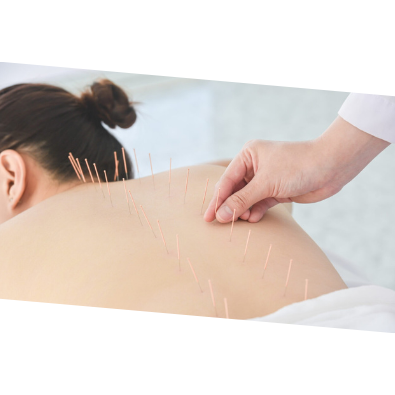
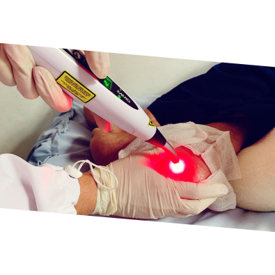
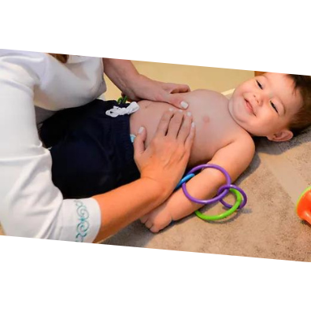
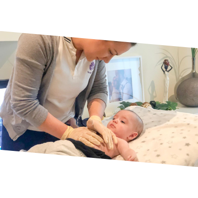
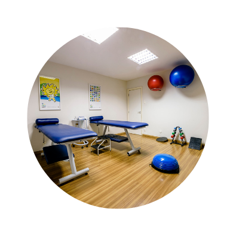

Seja bem-vindo ao espaço da fisioterapeuta Lilian Santos! Aqui você encontrará mais que tratamentos de fisioterapia, mas sim um atendimento humanizado e diferenciado, com uma equipe altamente experiente e qualificada. Nosso objetivo é promover a sua recuperação e bem-estar, priorizando um tratamento personalizado e eficaz. Explore nosso site e conheça nossos serviços e tratamentos, sempre prezando pela qualidade e excelência em tudo que fazemos. Estamos ansiosos para lhe atender!
Aqui, acreditamos que cada pessoa é única, e é por isso que valorizamos a individualidade de cada paciente. Ao longo do seu percurso de tratamento, a profissional Lilian Santos irá realizar uma avaliação minuciosa para entender suas queixas, metas e histórico médico, a fim de desenvolver um plano de tratamento personalizado e eficaz.
Nossa missão é ajudar você a alcançar seus objetivos de saúde e bem-estar, seja você um atleta em busca de recuperação rápida após uma lesão, uma pessoa idosa buscando aumentar a mobilidade ou alguém que sofre de dor crônica e busca alívio. Lilian santos está pronta para ajudá-lo(a) em sua jornada de reabilitação.
A equipe da Lilian Santos Fisioterapia está ansiosa para recebê-lo(a) em nosso espaço e auxiliá-lo(a) em sua jornada de reabilitação e bem-estar. Estamos comprometidos em fornecer um atendimento de excelência e em ajudá-lo(a) a alcançar os melhores resultados possíveis.
Seja bem-vindo(a) ao nosso espaço de cuidado e recuperação. Estamos aqui para apoiá-lo(a) em cada etapa do caminho.
Meu nome é Lilian Santos e gostaria de compartilhar minhas especificações profissionais com você. Sou formada em Fisioterapia pela Universidade Estadual de Goiás (UEG), onde adquiri uma base sólida em conhecimentos e práticas na área.
Além disso, tenho especialização em Medicina Chinesa e Acupuntura pelo IMES (Instituto de Medicina Chinesa), o que me permite explorar abordagens terapêuticas complementares e oferecer aos meus pacientes uma perspectiva holística de cuidado.
Aprimorei meus conhecimentos na área cardiovascular e respiratória com uma especialização na UNIT (Universidade de Integração Internacional da Lusofonia Afro-Brasileira). Essa especialização me permite lidar com pacientes que necessitam de cuidados específicos nesses sistemas, proporcionando tratamentos adequados e eficazes.
Para complementar minha formação, também me especializei em distúrbios craneocervicais e distúrbios temporo mandibulares. Essa área específica da fisioterapia é fundamental para o tratamento de problemas relacionados à mandíbula e à coluna cervical, permitindo que eu ajude meus pacientes a aliviar dores e melhorar sua qualidade de vida.
Adquiri experiência em terapia intensiva e cardiológica por meio de um aprimoramento profissional. Esse treinamento me permite lidar com pacientes que necessitam de cuidados intensivos, além de auxiliar na reabilitação cardíaca.
Tenho ainda um aprimoramento em terapia intensiva pediátrica e neonatal pela UNICAMP. Essa especialização me capacitou para atender às necessidades de bebês e crianças que requerem cuidados intensivos, oferecendo-lhes o tratamento adequado e o suporte necessário para sua recuperação.
Além disso, sou especialista em auditoria em saúde, o que me permite analisar processos e garantir a qualidade dos serviços prestados, contribuindo para a melhoria contínua da assistência aos pacientes.
No momento, estou em processo de obtenção de um MBA em Gestão Executiva de Pessoas, buscando desenvolver habilidades de liderança e gestão que complementam minha formação em saúde.
Também possuo formação em RTA (Reeducação Postural Global), uma abordagem terapêutica que visa corrigir desequilíbrios posturais e melhorar a biomecânica corporal.
Por fim, tenho formação em Taping, uma técnica que utiliza bandagens elásticas para proporcionar suporte muscular, alívio da dor e estabilização de articulações, contribuindo para a reabilitação física dos pacientes.
Com essa variedade de especializações e formações complementares, estou preparada para oferecer aos meus pacientes um atendimento personalizado e abrangente, buscando sempre proporcionar o melhor cuidado possível em suas necessidades específicas.

Na correria do dia a dia, muitas vezes fica difícil encontrar tempo para cuidar de nossa saúde e bem-estar. É aí que a fisioterapia domiciliar entra em cena, oferecendo uma solução conveniente e personalizada para as necessidades individuais de cada paciente.
Nossa equipe de fisioterapeutas altamente qualificados está pronta para ajudá-lo a recuperar sua saúde, funcionalidade e qualidade de vida, tudo no conforto e conveniência de sua própria casa. Entendemos que cada indivíduo é único, com condições de saúde específicas e metas diferentes. É por isso que adaptamos nossos serviços para atender às suas necessidades exclusivas.
Nossos serviços abrangem uma ampla gama de áreas, incluindo recuperação de lesões, reabilitação pós-operatória, tratamento de dores crônicas, fortalecimento muscular, melhora da mobilidade e muito mais. Utilizamos técnicas avançadas, baseadas em evidências científicas, para desenvolver um plano de tratamento personalizado que visa acelerar sua recuperação e alcançar resultados efetivos.
A acupuntura é uma técnica terapêutica que envolve a inserção de agulhas finas em pontos específicos do corpo, conhecidos como pontos de acupuntura. Esses pontos estão localizados em meridianos ou canais energéticos, nos quais o fluxo de energia vital, chamado de "Qi", deve fluir livremente para manter a saúde e o bem-estar.
Ao estimular esses pontos de acupuntura, podemos desbloquear e equilibrar o fluxo de energia em todo o corpo, promovendo a cura e o alívio de uma ampla gama de condições de saúde. A acupuntura tem sido comprovadamente eficaz no tratamento de dores musculoesqueléticas, enxaquecas, distúrbios do sono, estresse, ansiedade, problemas digestivos, entre outros.
Em nossa clínica de fisioterapia com acupuntura, valorizamos a individualidade de cada paciente e entendemos que cada pessoa é única em sua constituição física, emocional e energética. Portanto, realizamos uma avaliação completa e personalizada para identificar os desequilíbrios específicos e desenvolver um plano de tratamento adaptado às suas necessidades.
Nossa equipe utiliza técnicas avançadas de acupuntura, combinando pontos tradicionais com métodos modernos baseados em evidências científicas. Além das agulhas, também podemos empregar outras técnicas complementares, como a eletroacupuntura, auriculoterapia, ventosaterapia e moxabustão, a fim de proporcionar um tratamento abrangente e eficaz.
Sabemos o quanto os problemas relacionados ao distúrbio temporomandibular podem afetar significativamente a qualidade de vida de uma pessoa. A dor, desconforto e restrições na função mandibular podem dificultar atividades diárias simples, como comer, falar e até mesmo sorrir. É por isso que estamos aqui para oferecer um tratamento especializado e personalizado para ajudar você a encontrar alívio e restaurar a saúde da sua mandíbula.
Nossa equipe de fisioterapeutas experientes e dedicados está comprometida em fornecer um atendimento compassivo e eficaz para pacientes com distúrbio temporomandibular. Utilizamos uma abordagem abrangente que combina técnicas e terapias comprovadas para tratar as causas subjacentes dos sintomas, em vez de apenas aliviar temporariamente a dor.
No nosso centro de fisioterapia, entendemos que cada pessoa é única e que o distúrbio temporomandibular pode ter diversas causas e manifestações. Por isso, realizamos uma avaliação detalhada para identificar os fatores contribuintes específicos do seu caso. A partir daí, desenvolvemos um plano de tratamento personalizado, com o objetivo de restaurar o equilíbrio, a função e o alívio dos sintomas.
Nossos serviços de fisioterapia para distúrbio temporomandibular podem incluir técnicas como terapia manual, exercícios específicos para a mandíbula e a musculatura relacionada, alongamentos, liberação miofascial, terapia de relaxamento, entre outras. Além disso, oferecemos aconselhamento e educação sobre postura, hábitos alimentares e cuidados contínuos para que você possa ter um papel ativo na sua recuperação.
Entendemos o impacto físico e emocional que o distúrbio temporomandibular pode ter na sua vida, e nossa missão é ajudá-lo a recuperar sua qualidade de vida e bem-estar. Trabalharemos em conjunto com você, ouvindo suas preocupações e necessidades, para garantir que cada sessão de fisioterapia seja personalizada e focada nos resultados que você deseja alcançar.
Navegue pelo nosso site para obter mais informações sobre o distúrbio temporomandibular, nossos serviços de fisioterapia e depoimentos de pacientes satisfeitos. Se você está sofrendo com dor na mandíbula, dificuldades ao abrir ou fechar a boca, ruídos articulares ou qualquer outro sintoma relacionado, não hesite em entrar em contato conosco e agendar uma consulta. Estamos aqui para ajudar você a recuperar o conforto, a função e a alegria de viver sem restrições causadas pelo distúrbio temporomandibular.
Aqui, oferecemos uma abordagem inovadora e eficaz para o tratamento de uma ampla gama de condições de saúde por meio da Laserterapia. Nossa equipe especializada e dedicada está pronta para ajudá-lo a encontrar alívio da dor, acelerar a cicatrização e promover a recuperação de forma não invasiva e segura.
A Laserterapia utiliza a energia da luz para estimular processos de cura naturais do corpo. O laser de baixa intensidade emite um feixe de luz concentrado que penetra profundamente nos tecidos, estimulando as células e promovendo uma resposta biológica positiva. Isso resulta em uma série de benefícios terapêuticos, incluindo redução da dor, redução da inflamação, aumento da circulação sanguínea e aceleração da cicatrização de feridas.
Nossa clínica utiliza equipamentos de última geração e seguimos as melhores práticas e diretrizes clínicas para garantir tratamentos eficazes e seguros. A Laserterapia pode ser aplicada em uma variedade de condições, como lesões esportivas, dores musculares e articulares, artrite, tendinites, fibromialgia, neuropatia periférica, cicatrizes, entre outras.
A grande vantagem da Laserterapia é a sua natureza não invasiva e livre de efeitos colaterais significativos. Os tratamentos são indolores, seguros e não requerem o uso de medicamentos. Além disso, a Laserterapia pode ser aplicada em conjunto com outros tratamentos e terapias, complementando e potencializando seus benefícios.
Nossa equipe de profissionais altamente qualificados e experientes irá realizar uma avaliação completa para entender suas necessidades e desenvolver um plano de tratamento personalizado. Cada sessão de Laserterapia será conduzida de forma cuidadosa e atenciosa, visando obter os melhores resultados para você.
Nosso objetivo é ajudá-lo a recuperar sua saúde e qualidade de vida, proporcionando um tratamento eficaz e de ponta com a Laserterapia. Navegue pelo nosso site para obter mais informações sobre a Laserterapia, nossos serviços e depoimentos de pacientes satisfeitos. Se você está buscando uma abordagem inovadora para o tratamento de sua condição de saúde, entre em contato conosco e agende uma consulta. Estamos aqui para ajudá-lo a dar o próximo passo em direção à sua recuperação e bem-estar através da Laserterapia.
Aqui, oferecemos um cuidado especializado e compassivo para pessoas que vivem com DPOC, uma condição crônica que afeta os pulmões e dificulta a respiração. Nossa equipe de fisioterapeutas experientes e dedicados está pronta para ajudar você a gerenciar sua condição, melhorar sua função pulmonar e qualidade de vida.
Entendemos os desafios que os pacientes com DPOC enfrentam diariamente, como falta de ar, fadiga e restrições nas atividades cotidianas. É por isso que oferecemos uma abordagem abrangente de fisioterapia, visando melhorar sua capacidade pulmonar, otimizar sua respiração e promover uma vida mais ativa e independente.
Nossos serviços de fisioterapia para DPOC incluem uma variedade de técnicas e terapias comprovadas. Trabalhamos em estreita colaboração com você para desenvolver um plano de tratamento personalizado, levando em consideração suas necessidades individuais e objetivos de saúde. Isso pode incluir exercícios respiratórios específicos para fortalecer os músculos respiratórios, técnicas de expansão pulmonar, treinamento de condicionamento físico, exercícios de fortalecimento muscular e mobilização torácica.
O Método Reequilíbrio Toracoabdominal, também conhecido como RTA, é um serviço especializado oferecido em nossa clínica para ajudar você a alcançar uma postura correta, melhorar a função respiratória e otimizar o equilíbrio corporal.
Nossa abordagem terapêutica no RTA baseia-se em anos de experiência e conhecimento técnico, visando corrigir desequilíbrios posturais que podem ser causados por diversos fatores, como má postura, lesões, tensões musculares e problemas respiratórios.
Durante as sessões de RTA, nossa equipe de fisioterapeutas altamente qualificados irá utilizar técnicas especializadas e exercícios específicos para estimular a musculatura respiratória e os grupos musculares relacionados ao tórax e ao abdômen. O objetivo é reeducar esses músculos, promovendo o alinhamento adequado do corpo e a estabilidade postural.
Ao melhorar a função diafragmática, você experimentará uma melhoria significativa na sua capacidade respiratória, além de uma ventilação pulmonar mais eficiente. Esses benefícios são especialmente importantes para pessoas que sofrem de disfunções respiratórias, como asma, bronquite ou dificuldades respiratórias decorrentes de doenças pulmonares.
Nossa abordagem no RTA também leva em consideração os aspectos emocionais e psicossociais que podem afetar a postura e o equilíbrio corporal. Compreendemos que fatores como estresse, ansiedade e traumas emocionais podem influenciar a forma como nos movemos e nos posicionamos no espaço. Portanto, nossa equipe trabalha de forma abrangente, considerando tanto os aspectos físicos quanto os psicossomáticos para alcançar resultados duradouros.
É importante ressaltar que cada sessão de RTA é personalizada para atender às suas necessidades individuais. Nossos profissionais altamente treinados irão avaliar sua condição física, histórico médico e objetivos terapêuticos para criar um plano de tratamento personalizado. Durante todo o processo, estaremos ao seu lado, oferecendo orientação, suporte e ajustes necessários para garantir que você obtenha os melhores resultados possíveis.
Se você busca melhorar sua postura, respiração e qualidade de vida, o Método Reequilíbrio Toracoabdominal (RTA) é uma escolha confiável. Entre em contato conosco hoje mesmo para marcar uma consulta inicial e dar o primeiro passo rumo a uma postura mais saudável e uma respiração mais eficiente. Sua saúde e bem-estar são nossa prioridade, e estamos aqui para ajudar você a alcançar seus objetivos.
A bronquiolite viral aguda é uma infecção respiratória comum em bebês e crianças pequenas, que pode levar a dificuldades respiratórias e desconforto significativo. Nossa clínica oferece um serviço especializado de Fisioterapia Respiratória na Bronquiolite Viral Aguda, com o objetivo de proporcionar cuidados especializados e aliviar os sintomas respiratórios do seu filho.
>Nossa equipe de fisioterapeutas altamente qualificados e experientes está familiarizada com as características específicas da bronquiolite viral aguda e é especializada em oferecer intervenções terapêuticas eficazes para tratar a condição respiratória do seu bebê.
A fisioterapia respiratória desempenha um papel fundamental no tratamento da bronquiolite viral aguda, ajudando a melhorar a ventilação pulmonar, desobstruir as vias aéreas e reduzir o acúmulo de secreções nas vias respiratórias do bebê. Nossos fisioterapeutas utilizam uma variedade de técnicas especializadas, como percussão, vibração, drenagem postural e exercícios respiratórios, para promover a mobilização das secreções e facilitar a sua eliminação, o que alivia o desconforto respiratório e melhora a função pulmonar.
Além disso, nossa equipe também oferece orientações e treinamento aos pais, para que possam auxiliar no manejo dos sintomas respiratórios do bebê em casa. Isso inclui técnicas de higiene brônquica, posturas adequadas para facilitar a eliminação de secreções e orientações sobre quando procurar atendimento médico adicional.
Entendemos que a bronquiolite viral aguda pode ser um momento estressante para os pais, e estamos aqui para oferecer suporte e tranquilidade. Nossa equipe de fisioterapeutas está comprometida em fornecer cuidados individualizados e atenciosos para garantir o conforto e a recuperação do seu bebê.
Se o seu filho foi diagnosticado com bronquiolite viral aguda, entre em contato conosco para agendar uma consulta de fisioterapia respiratória. Nossos profissionais especializados irão avaliar cuidadosamente o estado respiratório do seu bebê e desenvolver um plano de tratamento personalizado para atender às necessidades específicas do seu filho.
Na nossa clínica, a saúde e o bem-estar do seu bebê são nossa prioridade. Estamos aqui para ajudar, fornecendo cuidados especializados e apoio compassivo durante o processo de recuperação da bronquiolite viral aguda. Conte conosco para fornecer o cuidado excepcional que o seu bebê merece.
A fibrose cística é uma condição genética crônica que afeta principalmente os sistemas respiratório e digestivo. Na nossa clínica, oferecemos um serviço especializado de Fisioterapia para Fibrose Cística, com o objetivo de melhorar a qualidade de vida dos pacientes e minimizar os sintomas associados a essa condição.
Nossa equipe de fisioterapeutas altamente capacitados e experientes compreende as particularidades da fibrose cística e está comprometida em fornecer cuidados individualizados e abrangentes para cada paciente. Trabalhamos em estreita colaboração com a equipe médica do paciente para desenvolver um plano de tratamento personalizado, visando otimizar a função respiratória, melhorar a mobilidade das vias aéreas e promover a eliminação de secreções.
A fisioterapia desempenha um papel fundamental no manejo da fibrose cística, especialmente na saúde pulmonar. Utilizamos técnicas especializadas, como drenagem postural, percussão, vibração, técnicas de tosse assistida e exercícios respiratórios, para ajudar a mobilizar e eliminar as secreções presentes nos pulmões. Essas técnicas visam melhorar a ventilação pulmonar, reduzir a ocorrência de infecções respiratórias e aumentar a capacidade respiratória, proporcionando alívio e melhorando a qualidade de vida do paciente.
Além disso, a fisioterapia também pode auxiliar no tratamento dos sintomas digestivos relacionados à fibrose cística. Podemos fornecer orientações sobre técnicas de massagem abdominal, exercícios de fortalecimento do trato gastrointestinal e estratégias nutricionais para ajudar a melhorar a digestão e a absorção de nutrientes.
Nosso objetivo é capacitar os pacientes com fibrose cística a gerenciar sua condição de forma eficaz. Durante as sessões de fisioterapia, também oferecemos educação e treinamento aos pacientes e suas famílias, para que possam realizar as técnicas de manejo respiratório e cuidados diários em casa.
Entendemos que viver com fibrose cística pode ser desafiador, mas estamos aqui para apoiá-lo em cada etapa do caminho. Nossa equipe de fisioterapeutas está comprometida em fornecer cuidados de alta qualidade, compassivos e personalizados para ajudar a melhorar a saúde respiratória, promover a mobilidade e garantir uma melhor qualidade de vida para os pacientes com fibrose cística.
Se você ou um ente querido tem fibrose cística, entre em contato conosco hoje mesmo para agendar uma consulta de fisioterapia especializada. Estamos aqui para fornecer o apoio e o tratamento necessários para ajudar você a enfrentar os desafios da fibrose cística e viver uma vida mais saudável e ativa.
Clinica
Sala
| Segunda-Feira | Terça-Feira | Quarta-Feira | Quinta-Feira | Sexta-Feira | Sabádo | Domingo |
|---|
| 07:00 até 20:00 | 07:00 até 20:00 | 07:00 até 20:00 | 07:00 até 20:00 | 07:00 até 20:00 |
|
|

 (61)99276-2219
(61)99276-2219